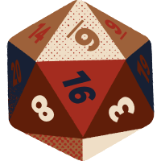
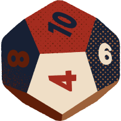
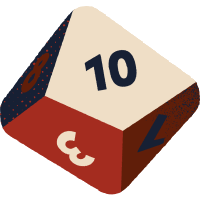
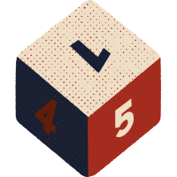
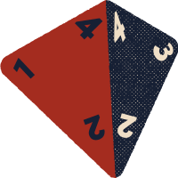

Czym są gry TTRPG?
Gry fabularne – znane też jako papierowe RPG – to po angielsku role-playing games, czyli gry, gdzie odgrywamy jakąś rolę. Jak się gra w gry RPG? Wcielasz się w wymyślonego bohatera i patrzysz na świat jego oczami, mówisz, co myśli i jakie działania podejmuje. Wszystko toczy się w fikcyjnej rzeczywistości stworzonej wspólnie przez grających, zazwyczaj Mistrza Gry oraz kilku graczy. Razem wymyślają i opowiadają oni jakąś historię: w większości gra fabularna RPG polega na rozmowie.
Najbardziej znane tytuły:
- Dungeons and Dragons
- Warhammer Fantasy
- Zew Cthulhu
KOŚCI
Ktoś z graczy zapomniał o swoich kościach? A może potrzebujesz wylosowac wynik spośród niestandardowych wartości? Kliknij na symbol wybranej kości, dopisz modyfikator, jeżeli jest on istotny, a otrzymasz wynik!
| KOŚCI | ILOŚĆ | WYNIK |
|  | ||
|  | ||
|  | ||
|  | ||
|  | ||
 |
KAMPANIE
Uporządkuj kampanie, których oczekujesz!
PODRĘCZNIKI
Zbiór najpopularniejszych systemów TTRPG:
Dungeongs and Dragons
Uważana za prekursora gatunku fabularna gra fantasy zaprojektowana przez Gary’ego Gygaxa i Dave’a Arnesona, po raz pierwszy opublikowana w 1974 przez Tactical Studies Rules (TSR). Aktualnie grę wydaje Wizards of the Coast, przedsiębiorstwo zależne od Hasbro. Wywodzi się ona z miniaturowych gier figurkowych, jako wariant gry Chainmail zawierającej zbliżony system rozgrywki. Publikacja D&D jest szeroko uznawana za początek nowoczesnych gier RPG i, co więcej, całego przemysłu gier fabularnych.